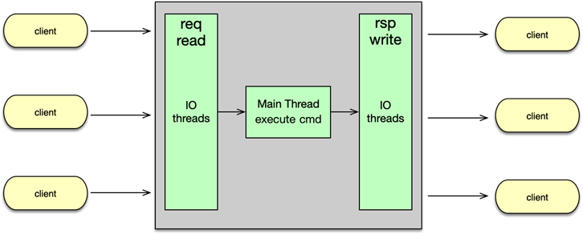

- 00 开篇寄语：缓存，你真的用对了吗？.md.html
- 01 业务数据访问性能太低怎么办？.md.html
- 02 如何根据业务来选择缓存模式和组件？.md.html
- 03 设计缓存架构时需要考量哪些因素？.md.html
- 04 缓存失效、穿透和雪崩问题怎么处理？.md.html
- 05 缓存数据不一致和并发竞争怎么处理？.md.html
- 06 Hot Key和Big Key引发的问题怎么应对？.md.html
- 07 MC为何是应用最广泛的缓存组件？.md.html
- 08 MC系统架构是如何布局的？.md.html
- 09 MC是如何使用多线程和状态机来处理请求命令的？.md.html
- 10 MC是怎么定位key的.md.html
- 11 MC如何淘汰冷key和失效key.md.html
- 12 为何MC能长期维持高性能读写？.md.html
- 13 如何完整学习MC协议及优化client访问？.md.html
- 14 大数据时代，MC如何应对新的常见问题？.md.html
- 15 如何深入理解、应用及扩展 Twemproxy？.md.html
- 16 常用的缓存组件Redis是如何运行的？.md.html
- 17 如何理解、选择并使用Redis的核心数据类型？.md.html
- 18 Redis协议的请求和响应有哪些“套路”可循？.md.html
- 19 Redis系统架构中各个处理模块是干什么的？.md.html
- 20 Redis如何处理文件事件和时间事件？.md.html
- 21 Redis读取请求数据后，如何进行协议解析和处理.md.html
- 22 怎么认识和应用Redis内部数据结构？.md.html
- 23 Redis是如何淘汰key的？.md.html
- 24 Redis崩溃后，如何进行数据恢复的？.md.html
- 25 Redis是如何处理容易超时的系统调用的？.md.html
- 26 如何大幅成倍提升Redis处理性能？.md.html
- 27 Redis是如何进行主从复制的？.md.html
- 28 如何构建一个高性能、易扩展的Redis集群？.md.html
- 29 从容应对亿级QPS访问，Redis还缺少什么？.md.html
- 30 面对海量数据，为什么无法设计出完美的分布式缓存体系？.md.html
- 31 如何设计足够可靠的分布式缓存体系，以满足大中型移动互联网系统的需要？.md.html
- 32 一个典型的分布式缓存系统是什么样的？.md.html
- 33 如何为秒杀系统设计缓存体系？.md.html
- 34 如何为海量计数场景设计缓存体系？.md.html
- 35 如何为社交feed场景设计缓存体系？.md.html
- 捐赠
26 如何大幅成倍提升Redis处理性能？
本课时我们主要学习如何通过 Redis 多线程来大幅提升性能，涉及主线程与 IO 线程、命令处理流程，以及多线程方案的优劣等内容。
主线程
Redis 自问世以来，广受好评，应用广泛。但相比， Memcached 单实例压测 TPS 可以高达百万，线上可以稳定跑 20~40 万而言，Redis 的单实例压测 TPS 不过 10~12 万，线上一般最高也就 2~4 万，仍相差一个数量级。
Redis 慢的主要原因是单进程单线程模型。虽然一些重量级操作也进行了分拆，如 RDB 的构建在子进程中进行，文件关闭、文件缓冲同步，以及大 key 清理都放在 BIO 线程异步处理，但还远远不够。线上 Redis 处理用户请求时，十万级的 client 挂在一个 Redis 实例上，所有的事件处理、读请求、命令解析、命令执行，以及最后的响应回复，都由主线程完成，纵然是 Redis 各种极端优化，巧妇难为无米之炊，一个线程的处理能力始终是有上限的。当前服务器 CPU 大多是 16 核到 32 核以上，Redis 日常运行主要只使用 1 个核心，其他 CPU 核就没有被很好的利用起来，Redis 的处理性能也就无法有效地提升。而 Memcached 则可以按照服务器的 CPU 核心数，配置数十个线程，这些线程并发进行 IO 读写、任务处理，处理性能可以提高一个数量级以上。
IO 线程
面对性能提升困境，虽然 Redis 作者不以为然，认为可以通过多部署几个 Redis 实例来达到类似多线程的效果。但多实例部署则带来了运维复杂的问题，而且单机多实例部署，会相互影响，进一步增大运维的复杂度。为此，社区一直有种声音，希望 Redis 能开发多线程版本。
因此，Redis 即将在 6.0 版本引入多线程模型，当前代码在 unstable 版本中，6.0 版本预计在明年发版。Redis 的多线程模型，分为主线程和 IO 线程。
因为处理命令请求的几个耗时点，分别是请求读取、协议解析、协议执行，以及响应回复等。所以 Redis 引入 IO 多线程，并发地进行请求命令的读取、解析，以及响应的回复。而其他的所有任务，如事件触发、命令执行、IO 任务分发，以及其他各种核心操作，仍然在主线程中进行，也就说这些任务仍然由单线程处理。这样可以在最大程度不改变原处理流程的情况下，引入多线程。
命令处理流程
Redis 6.0 的多线程处理流程如图所示。主线程负责监听端口，注册连接读事件。当有新连接进入时，主线程 accept 新连接，创建 client，并为新连接注册请求读事件。

当请求命令进入时，在主线程触发读事件，主线程此时并不进行网络 IO 的读取，而将该连接所在的 client 加入待读取队列中。Redis 的 Ae 事件模型在循环中，发现待读取队列不为空，则将所有待读取请求的 client 依次分派给 IO 线程，并自旋检查等待，等待 IO 线程读取所有的网络数据。所谓自旋检查等待，也就是指主线程持续死循环，并在循环中检查 IO 线程是否读完，不做其他任何任务。只有发现 IO 线程读完所有网络数据，才停止循环，继续后续的任务处理。
一般可以配置多个 IO 线程，比如配置 4~8 个，这些 IO 线程发现待读取队列中有任务时，则开始并发处理。每个 IO 线程从对应列表获取一个任务，从里面的 client 连接中读取请求数据，并进行命令解析。当 IO 线程完成所有的请求读取，并完成解析后，待读取任务数变为 0。主线程就停止循环检测，开始依次执行 IO 线程已经解析的所有命令，每执行完毕一个命令，就将响应写入 client 写缓冲，这些 client 就变为待回复 client，这些待回复 client 被加入待回复列表。然后主线程将这些待回复 client，轮询分配给多个 IO 线程。然后再次自旋检测等待。
然后 IO 线程再次开始并发执行，将不同 client 的响应缓冲写给 client。当所有响应全部处理完后，待回复的任务数变为 0，主线程结束自旋检测，继续处理后续的任务，以及新的读请求。
Redis 6.0 版本中新引入的多线程模型，主要是指可配置多个 IO 线程，这些线程专门负责请求读取、解析，以及响应的回复。通过 IO 多线程，Redis 的性能可以提升 1 倍以上。
多线程方案优劣
虽然多线程方案能提升1倍以上的性能，但整个方案仍然比较粗糙。首先所有命令的执行仍然在主线程中进行，存在性能瓶颈。然后所有的事件触发也是在主线程中进行，也依然无法有效使用多核心。而且，IO 读写为批处理读写，即所有 IO 线程先一起读完所有请求，待主线程解析处理完毕后，所有 IO 线程再一起回复所有响应，不同请求需要相互等待，效率不高。最后在 IO 批处理读写时，主线程自旋检测等待，效率更是低下，即便任务很少，也很容易把 CPU 打满。整个多线程方案比较粗糙，所以性能提升也很有限，也就 1~2 倍多一点而已。要想更大幅提升处理性能，命令的执行、事件的触发等都需要分拆到不同线程中进行，而且多线程处理模型也需要优化，各个线程自行进行 IO 读写和执行，互不干扰、等待与竞争，才能真正高效地利用服务器多核心，达到性能数量级的提升。
© 2019 - 2023 Liangliang Lee. Powered by gin and hexo-theme-book.